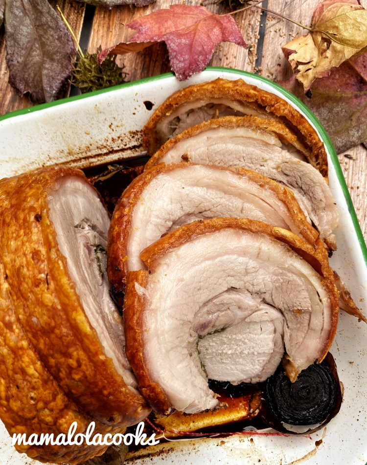

Pork Belly Lechon, Cebu Style Roast

Description
Pork belly roast is a favourite at our place although we don’t cook if very often, but when we do it’s got to be done properly. It should have a shatteringly lovely crackle, the meat has to be moist tender and it should have the Filipino touch. Lots of garlic, whole peppercorns, bay leaf, onion and lemon grass.
Ingredients
- 1 kg Pork Belly
- 1 stalk lemon grass or 2 teaspoons of lemon grass paste
- 5 bay leaf ,dried or fresh
- 1 medium onion, sliced 1 onion quarted
- 1 bulb garlic
- 1 carrot sliced into 4 to use as trivets
- Salt and pepper
Steps
- Have your butcher score the skin of pork belly if possible, or if you have a sharp knife you can do it yourself. Make diagonal cuts 2 inches apart, skin deep only. Use a paper towel to dry skin.
- Lay pork belly on a chopping board skin side down. Sprinkle salt and pepper to taste. Lay slices of onion and bay leaves on top. Dot surface with peeled cloves of garlic( use half of one bulb). Lay lemon grass on the middle of the pork.
- Roll pork belly enclosing the filling and use butchers twine to secure it tied at 2 inch intervals.
- Place sliced carrots ,quarted onions and the rest of the garlic in a the middle of the roasting pan. Lay the belly on top of the veggies.
- Rub about 1 tablespoon of cooking oil on the skin of the pork belly. Place 2 tablespoons of salt on top of the skin, making sure you put it all over skin. Place the pan with the pork belly in the fridge uncovered for at least 6 hours preferably overnight. Take out from the fridge about 2 hours before cooking to make it come to room temperature.
- Preheat oven to 200C for at least 10 minutes. Bake pork belly on high for 30 minutes.
- Take pork belly out of the oven and add a cup of water to the baking pan taking care to avoid the skin. Return pork to the oven and reduce temp to 160C. Cook a further one hour. Remove from oven and rest for at least 10 minutes so the juices will absorb back into the meat.
- Remove twine before slicing. Serve with gravy or Mang Tomas Lechon Sauce.